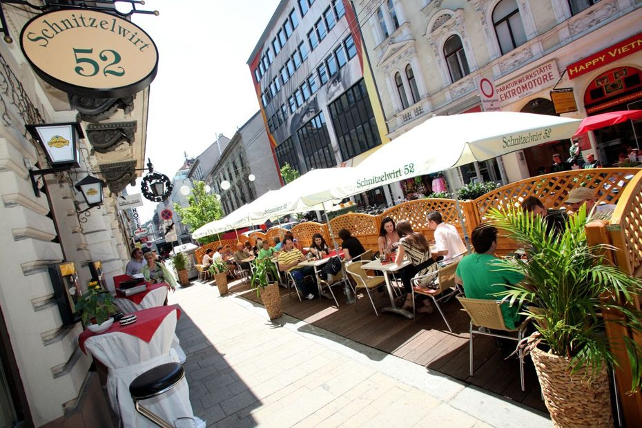
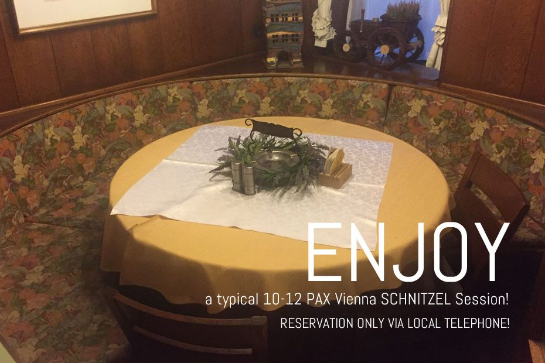
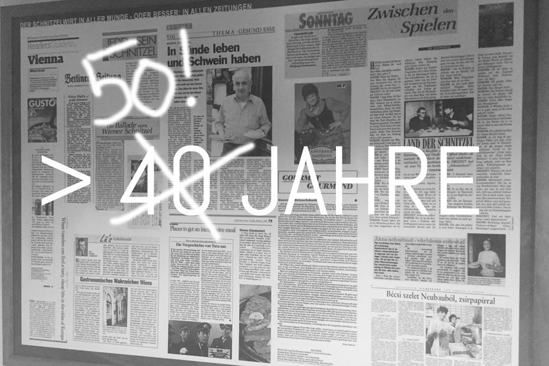
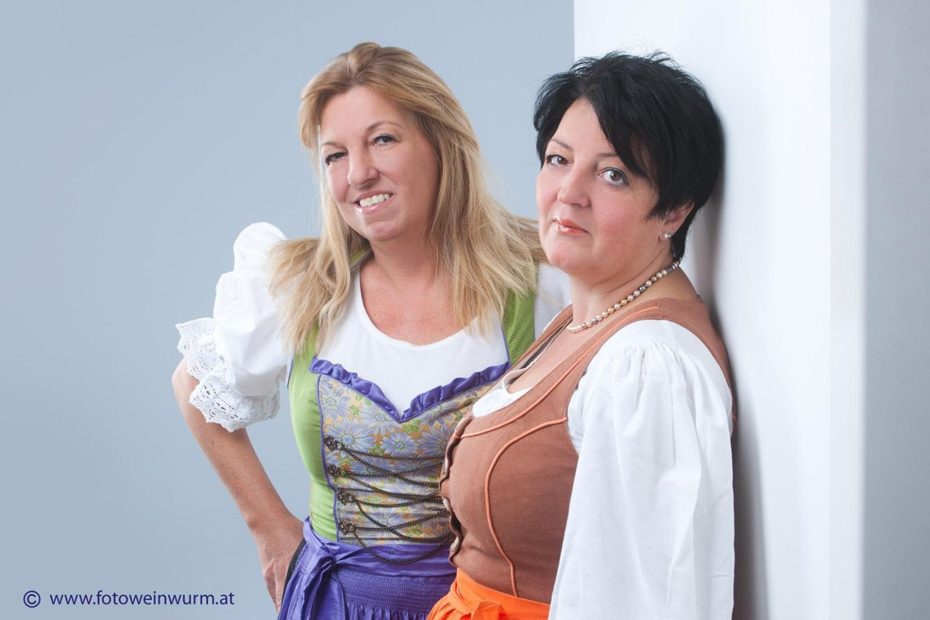
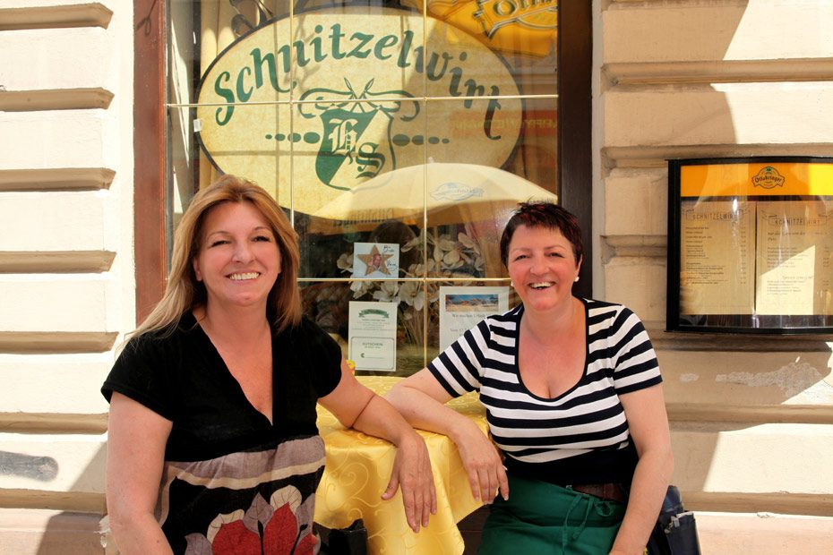

Seit über 50 Jahren
Das Lokal und seine Geschichte
Ein Familienbetrieb in der Neubaugasse, gegründet von Günther und Helene Schmidt und heute in den Händen der beiden Töchter.
Vor über 50 Jahren gründete Günther Schmidt mit seiner Frau Helene das Lokal „Schnitzelwirt“ in der Neubaugasse 52 im 7. Wiener Gemeindebezirk. Nomen est omen – Schnitzel ist nicht gleich Schnitzel.
Günther wollte, konnte und machte ein Schnitzel zum Fürchten: natürlich, weil es so furchtbar gut war, weil es so furchtbar viel war und weil es so furchtbar preisgünstig war.
Auch nach der Übergabe des Lokals an die beiden beherzten Töchter hat sich an dieser Geschäftsstrategie nichts geändert. Diese Devise wird nicht scheitern – und so ist der Schnitzelwirt das Kultlokal für viele Wiener und noch mehr Touristen, die dem vorauseilenden Ruf dieses urigen Lokals gefolgt sind und gewiss noch folgen werden.
Zeitleiste
Von der Gründung bis heute
Die Gründung
Günther Schmidt eröffnet gemeinsam mit seiner Frau Helene den Schnitzelwirt in der Neubaugasse 52.
Der Ruf eilt voraus
Zeitungen im In- und Ausland schreiben über das Lokal. Die Presseberichte hängen bis heute gerahmt an der Wand.
Über 50 Jahre
Der Schnitzelwirt wird zur festen Größe im 7. Bezirk – für Wiener ebenso wie für Gäste aus aller Welt.
Die nächste Generation
Die beiden Töchter übernehmen das Lokal und führen die Devise des Vaters unverändert weiter.
Bilder aus dem Haus
Galerie
Alle Fotos stammen von der bestehenden Website des Lokals.






In allen Zeitungen
Ein halbes Jahrhundert Presse
„Die Ballade vom Wiener Schnitzel“, „Gastronomisches Wahrzeichen Wiens“, „Jeder sein Schnitzel“: Die Wand im Lokal ist mit Artikeln aus österreichischen und internationalen Zeitungen tapeziert – von Wien über Berlin bis Schweden und Ungarn.
Die Ausschnitte hängen im Original im Gastraum und sind auf dem Foto in der Galerie zu sehen.
Auf einen Blick
- Gegründet vonGünther & Helene Schmidt
- Heute geführt vonden beiden Töchtern
- AdresseNeubaugasse 52, 1070 Wien
- KücheDi–Sa 10:45–21:30
- RuhetageSo, Mo, Feiertage